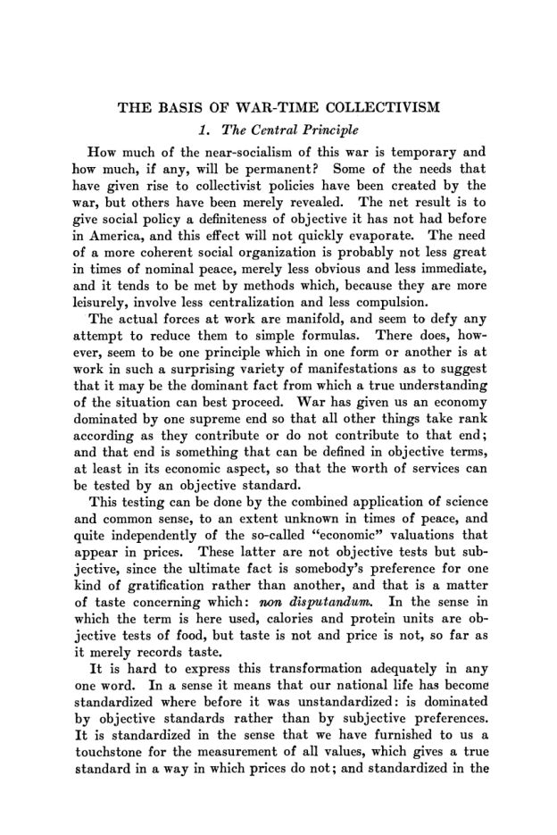

Clark e a base do coletivismo de guerra
Leitura: 8 min
Em 1917, J. M. Clark pergunta o que a economia de guerra revela sobre a de paz: quando a sociedade sabe o que quer, padrões objetivos substituem os preços, e as falhas do mercado ficam visíveis.


O governo americano, em 1917, pagava salários altos aos operários das fábricas de munições para atraí-los. Com esse dinheiro, eles passavam a contratar, como consumidores, o trabalho de quem fazia charutos, vitrolas, pianos e outros luxos a que não estavam acostumados. Na prática, disputavam com o próprio governo a mão de obra que a guerra exigia.
O paradoxo abre o argumento de J. M. Clark, da University of Chicago, no número de dezembro de 1917 da American Economic Review. A pergunta é quanto do quase socialismo da guerra é temporário. Algumas necessidades que levaram a políticas coletivistas foram criadas pela guerra; outras, diz ele, apenas foram reveladas.
Qual é o princípio central?
A guerra deu à economia um fim supremo, de modo que tudo se ordena segundo sua contribuição para ele. Esse fim pode ser definido em termos objetivos, e o valor dos serviços pode ser testado por padrões que a ciência e o bom senso fornecem, independentemente das avaliações que aparecem nos preços. Calorias e proteínas são testes objetivos de alimento; o gosto não é, e o preço também não, na medida em que só registra o gosto.
Clark chama isso de economia padronizada. O especialista pode padronizar o consumo, porque necessidades elementares, como a saúde física, são as mesmas para todos e definíveis pelo médico. Pode também padronizar a produção, levando todo o trabalho à melhor prática conhecida. Em suas palavras, a sociedade sabe o que quer e pode redigir especificações.
“Num estado de guerra, o próprio indivíduo vale só o que vale para o Estado.” (“in a state of war the individual himself is worth only what he is worth to the state”)
Há ainda um segundo elemento. A economia de paz está na ofensiva, explorando gratificações novas; a de guerra está na defensiva. Uma nação que gasta um terço ou um quarto da renda nacional na luta pouco tem para ampliar o consumo, mesmo dos mais afortunados, e o problema vital passa a ser não deixar faltar o essencial.
Como funciona o modo não padronizado?
O sistema de livre troca dá à sociedade o que ela quer, mas a sociedade quer o que seus membros querem, ponderados pelo poder de compra, seja qual for a origem dele. Clark imagina Smith, que convence o público a comprar o chapéu que ele sabe fazer, e a família Jones, subnutrida. A sociedade parece preferir que Smith, já bem alimentado, tenha uma vitrola a dar aos Jones um pouco mais de comida. Na paz, o consumo maior de Smith conta como sucesso social; na guerra, como fracasso, porque subtrai recursos do fim comum.
O consumidor espera que lhe digam o que querer, e milhares de agências competem para persuadi-lo, com resultado menor que a soma dos esforços. O conhecimento, se não puder ser cercado como propriedade privada, tem pouco incentivo para ser produzido; se for cercado, não é usado em toda a sua capacidade. Custos que escapam à lei, como a saúde de uma mãe que trabalha para sustentar a família, não entram na conta da empresa, mas entram na da sociedade, que pode traçar outra linha de base.
Por que, então, tolerar o sistema? Não só por inércia. O mercado prevaleceu porque, imperfeito como é, não havia substituto: a sociedade não sabia por si o que queria e aceitava a palavra do mercado, sem desejar uma economia estereotipada.
O que a guerra muda?
Sob a pressão da guerra, o medo de perder a elasticidade necessária ao progresso deixa de impedir os ganhos imediatos: eliminar desperdícios e duplicações da concorrência, cobrir com serviços públicos os pontos cegos do mercado. Fabricantes de aviões trocam patentes; ferrovias reúnem interesses e exigem vagões cheios; indústrias essenciais ficam sob conselhos federais. Para Clark, alguns anos de guerra darão mais conhecimento experimental sobre a eficiência econômica em grande escala do que décadas de individualismo.
O caso que ele acompanha enquanto escreve é o do novo motor de avião americano, anunciado como tão bom quanto os melhores estrangeiros e fabricável em série. A reunião de engenheiros, projetos, métodos e segredos de fabricação, sob um incentivo forte, o tornou possível. Para o autor, isso mostra possibilidades não usadas nas indústrias com patentes e processos secretos, mas não prova que todos os incentivos competitivos possam ser descartados.
Que lugar fica para os pequenos produtores?
Os campos mais atrasados, diz Clark, são os de muitos pequenos produtores, que não podem experimentar nem estudar os métodos alheios. Uma saída é a extinção pelos grandes, que ele considera muito menos desejável. Outra é que uma agência grande faça a padronização por eles: sistemas de contabilidade, estoques e organização do espaço, estudados em escala, dariam ao pequeno varejista as vantagens que a loja de cadeia tem, deixando-lhe o que nenhum sistema resolve, conhecer seus clientes. Onde o requisito é exatidão e desinteresse, como nas agências de emprego e nos testes do Bureau of Standards, a agência pública leva vantagem.
O que é o mínimo social?
O racionamento é a forma de guerra de uma política que vinha se formando na paz: certas coisas são importantes demais para ficar à mercê do poder de compra e devem ser distribuídas segundo a regra de que cada um conta como um. O mínimo é, sobretudo, de oportunidade: saúde, conhecimento, beleza e uso das próprias capacidades. Uma catástrofe impõe essa regra automaticamente, como na distribuição de alimentos e cobertores a ricos e pobres depois de um incêndio ou de um terremoto.
A desigualdade, escreve Clark, é atacada em extensão, pela tributação progressiva, e em intensidade, pelo mínimo social: ensino e parques gratuitos, merenda escolar, agências públicas de emprego. A lei de terras públicas, o Homestead Act, é seu exemplo de um preço de esforço, que o pobre pode pagar e o rico não, ao contrário do preço em dinheiro.
O que muda nos salários?
Na guerra, os deslocamentos de trabalho e capital são tão grandes e urgentes que, deixados aos preços, exigiriam remunerações enormes. Clark distingue o salário de eficiência coletiva, necessário para manter e estimular a eficiência, do salário de eficiência competitiva, necessário para obtê-la num ponto contra as ofertas de outros. O primeiro tem piso mais alto, porque a perda causada por salários baixos e jornadas longas não recai inteira sobre quem a provoca. A sociedade pode também testar seu poder de compradora monopolista de capital e recursos, obtendo poupança mais barata quando controla o gasto em luxos.
Como conclui?
O governo deve ajudar as empresas a ser produtoras mais eficientes, e a ideia de que não deve ajudá-las para não favorecer o capitalista é, para Clark, sabotagem política. Padrões objetivos permitem um grau maior de controle social sem degenerar em tirania, mas são difíceis e trabalhosos de obter; F. W. Taylor esperava que a administração científica dissolvesse os conflitos na indústria, e a expectativa não se cumpriu.
“Sem ciência, só o despotismo pode ser organizado com coerência. Com a ciência à disposição, a democracia tem ao menos uma chance.” (“Without science only despotism can be coherently organized. With science at its disposal, democracy has at least a chance.”)
Na minha leitura
Na minha leitura, a contribuição do artigo é deslocar o debate sobre a economia de guerra da emergência para o método. Clark não diz que o mercado erra; diz que o preço mede preferências ponderadas por poder de compra, e que, quando há um objetivo comum mensurável, outras medidas passam a ser possíveis. O argumento antecipa temas que a economia formalizaria depois: bens públicos, externalidades, o conhecimento como bem não rival.
O texto também traz seus próprios limites. O autor separa os campos em que a padronização rende dos campos em que o incentivo privado ainda é necessário, e insiste que padrões objetivos verdadeiros são raros. A pergunta que deixa é empírica: em que setores a coordenação central acrescenta mais do que retira.
Glossário
- Economia padronizada
- na expressão de Clark, economia guiada por padrões objetivos, e não por preferências expressas em preços.
- Mínimo social
- conjunto de bens e oportunidades garantidos a todos, fora da regra do poder de compra.
- Preço de esforço
- contrapartida em trabalho ou uso efetivo, como na concessão de terras públicas pelo Homestead Act.
- Salário de eficiência
- salário que sustenta ou estimula a produtividade do trabalhador.
- Comprador monopolista (monopsônio)
- único comprador de um bem ou fator, capaz de influir no seu preço.
- Bem não apropriável
- bem, como o conhecimento, cujo uso por um não impede o de outros e que é difícil cercar como propriedade.
Fontes
- The Basis of War-Time Collectivism — J. M. Clark (University of Chicago) (pp. 772–790). JSTOR · Internet Archive (PDF)
- Edição completa, com os demais artigos: Nº 149 do Arquivo.
Documento em domínio público (EUA, publicado antes de 1931), via JSTOR Early Journal Content e Internet Archive. Resumo e comentário do autor deste site, sem afiliação com a American Economic Association. Encontrou um erro? Escreva: a correção é publicada no próprio texto, com data.
↑ Nº 149 · A receita de guerra, o coletivismo de Clark e a escala de Dewing Blakey e a lei da receita de guerra de 1917 →